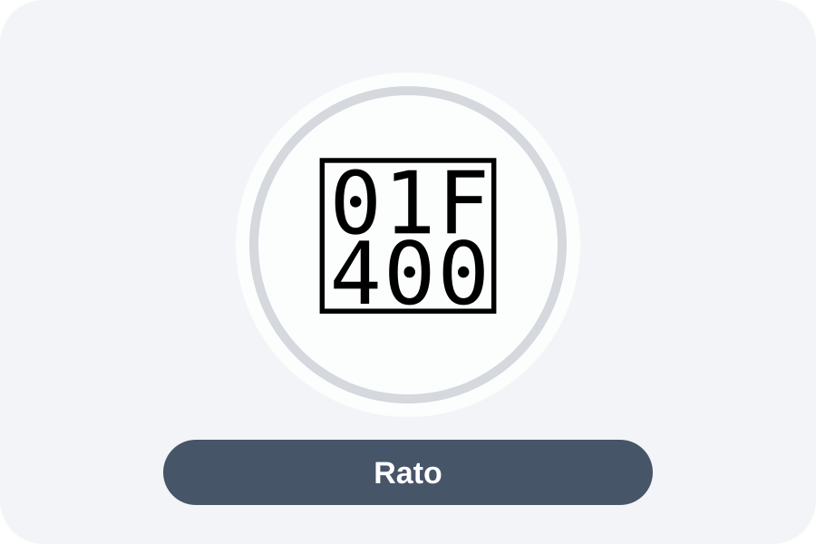

O micróbio pega uma carona
O animal pode carregar um microrganismo de um lugar para outro. O micróbio não precisa crescer nem se desenvolver dentro dele para ser transportado.
Jornada Científica • 4º ano
Descubra como alguns animais podem participar da viagem de micróbios de um lugar para outro.
É mais simples do que parece.
O animal pode carregar um microrganismo de um lugar para outro. O micróbio não precisa crescer nem se desenvolver dentro dele para ser transportado.
Achar um micróbio no animal mostra que ele pode carregá-lo, mas nem sempre prova que aquele animal transmitiu uma doença.
Limpeza, saneamento, alimentos protegidos e controle de pragas ajudam a impedir que o micróbio complete essa viagem.
O micróbio pega uma carona.
Ex.: mosquito da dengue.
Clique em um card e acompanhe o caminho completo: animal → micróbio → doença → transmissão → prevenção.
Toque em uma opção e a página destaca os animais relacionados. Isso não significa que todos tenham o mesmo peso na transmissão.

Na leptospirose, não é correto tratá-lo como equivalente à mosca.
O rato é principalmente um reservatório: a bactéria Leptospira pode permanecer em seus rins e sair pela urina, contaminando água, lama e solo.
Evita alimento e abrigo para moscas, baratas, formigas e roedores.
Não deixe alimentos expostos ao contato de insetos e superfícies contaminadas.
Higiene ajuda a interromper a passagem dos microrganismos.
Água segura e destino correto de fezes e resíduos reduzem a contaminação.
Vede frestas, use telas quando necessário e evite acúmulo de matéria orgânica.
Água e lama podem estar contaminadas com urina de roedores.
São só 4 perguntas. A página corrige na hora.
A página foi construída a partir de documentos institucionais e literatura científica. Entre as principais referências: